Odoo's own fonts and font sizes, a quiet plum and teal palette, and a set of tools that save clicks all day long.
One search for every menu of every app, and for your contacts, orders, leads, invoices... Ctrl + Shift + F from anywhere.
Type new lead or create invoice to open a blank form, in the right app, with its defaults.
Star the menus you use daily. Your pins and recently opened records are one keystroke away.
All your apps as large tiles, your pins as shortcuts, and a search that also finds menus.
Keep menus in the top bar, or move them to a collapsible sidebar that becomes a drawer on tablets.
A complete, readable dark palette for every screen - lists, forms, kanban, pivot, calendar, chatter.
Tighter rows for long lists, and forms that use the whole screen with the chatter below.
A full-screen search sheet on phones and a sliding sidebar drawer on tablets.
Arabic, Hebrew, Persian: the whole theme mirrors, icons and keyboard navigation included.
Global search
The search in the top bar (or Ctrl + Shift + F, ⌘ ⇧ F on Mac) looks through the menus of all your apps and through your records at the same time.
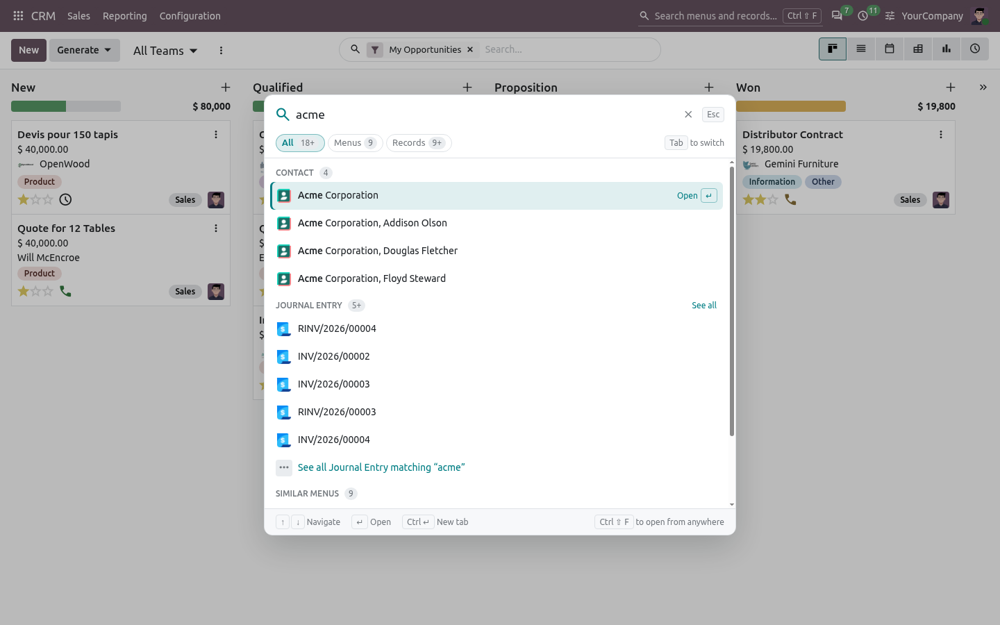
Start typing new or create: new contact, new quotation, create task. The blank form opens in the app made for it, with the app's defaults. Only record types the user is allowed to create are offered, each app's main ones first.
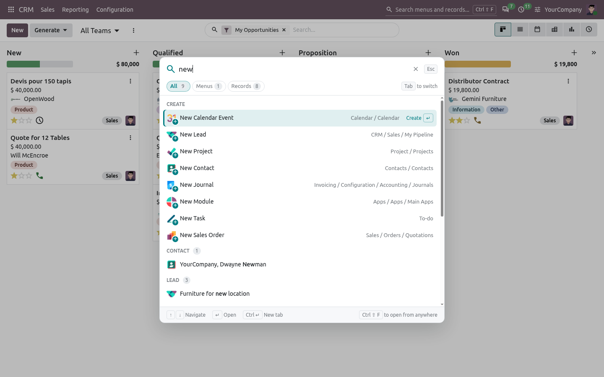
Star a menu in the search or the sidebar to pin it. Before you type, the search shows your pinned menus, the records you opened last and your recent menus. Pins are personal and saved on the server, so they follow you on every device.
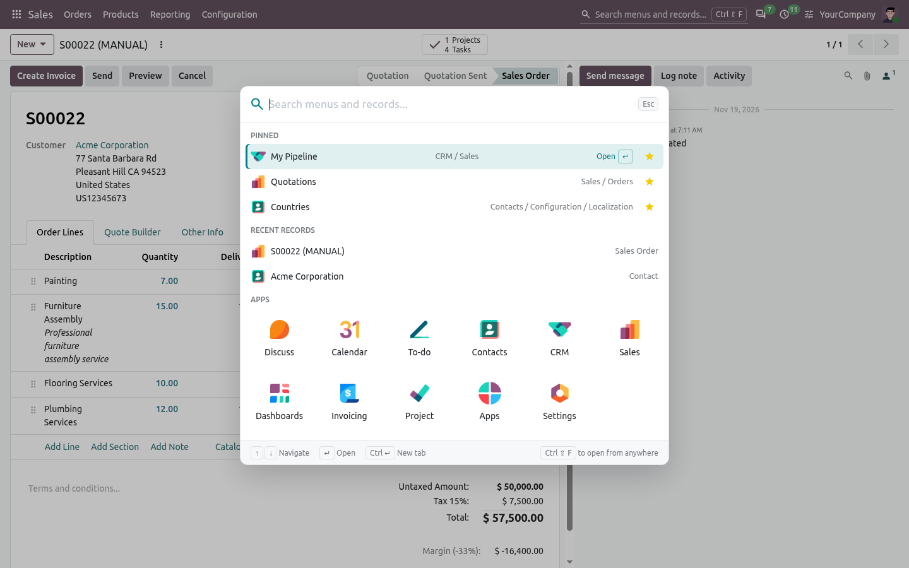
App board
The apps button opens a full-screen board: every app as a large tile, your pinned menus as shortcuts, and a search that filters apps and lists matching menus as you type.
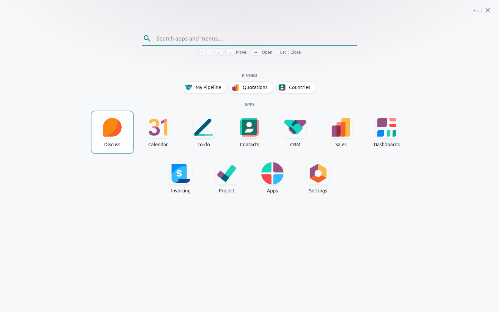
Menu layout
Keep Odoo's menus in the top bar, or show the current app's menus in a sidebar on the left.
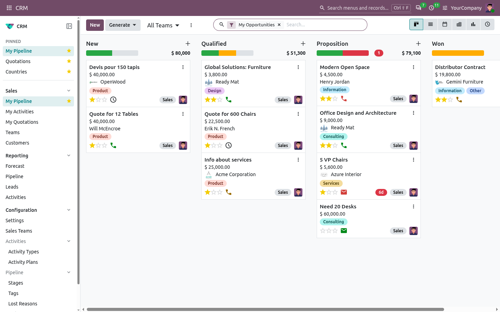
Quick settings
The sliders icon gathers the display options: menu layout, dark mode, compact view and full-width forms, plus links to the search, your preferences and the theme settings.
The options are shared by the whole company. Administrators change them here or in Settings - both always show the same values - and other users see them read-only.
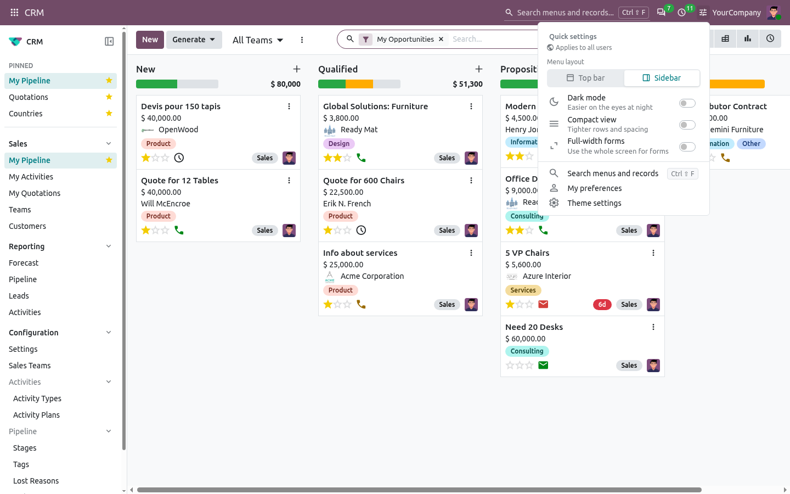
Dark mode
Layered slate surfaces, readable text everywhere (WCAG AA contrast), dark badges, alerts and kanban colors, and the plum and teal palette tuned for dark backgrounds.
Every view of every app in the same dark palette.
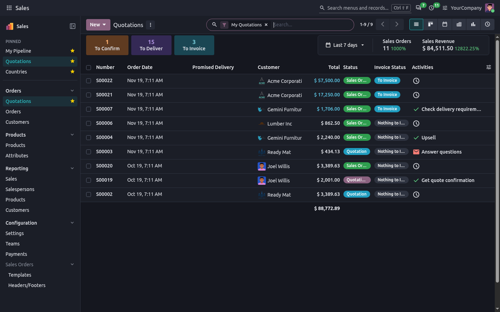
Search, app board, sidebar and quick settings follow the scheme too.
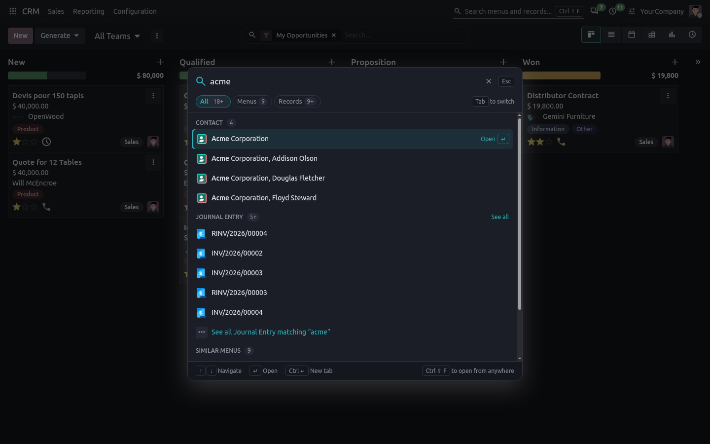
Full-width forms
With full-width forms on, forms span the whole screen and the chatter moves below them, instead of taking a third of the width on wide screens. Compact view tightens rows and spacing for long lists.
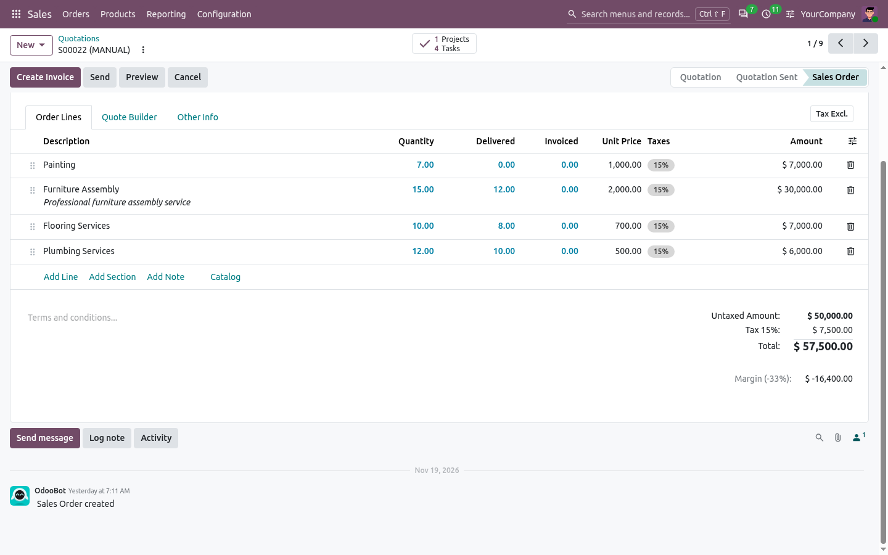
On phones the search becomes a full-screen sheet with large touch targets; on tablets the sidebar slides over the page instead of squeezing it. Nothing scrolls sideways.
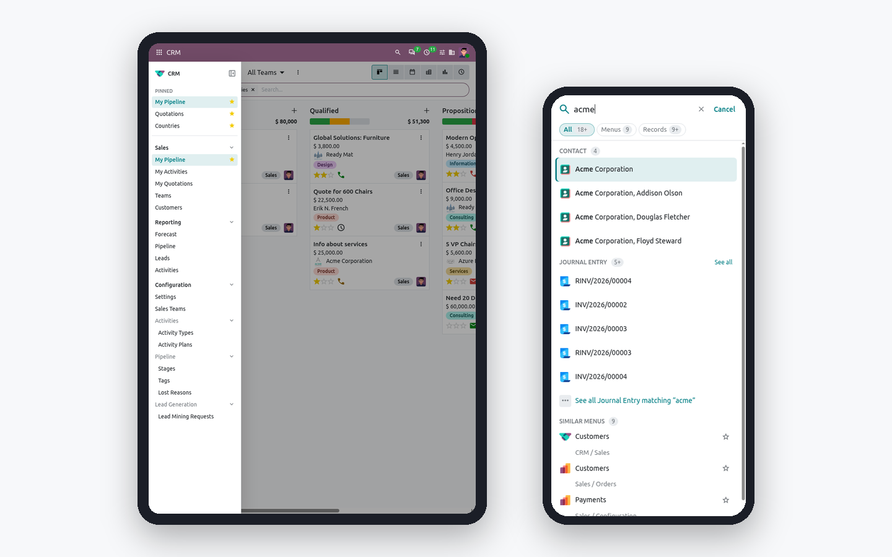
In Arabic, Hebrew or Persian the whole theme mirrors: sidebar on the right, icons pointing the right way, arrow keys following the reading direction.
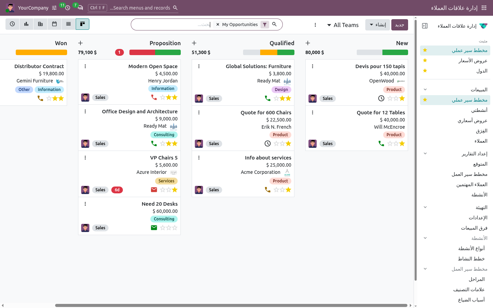
Configuration
Settings › General Settings › Backend Theme:
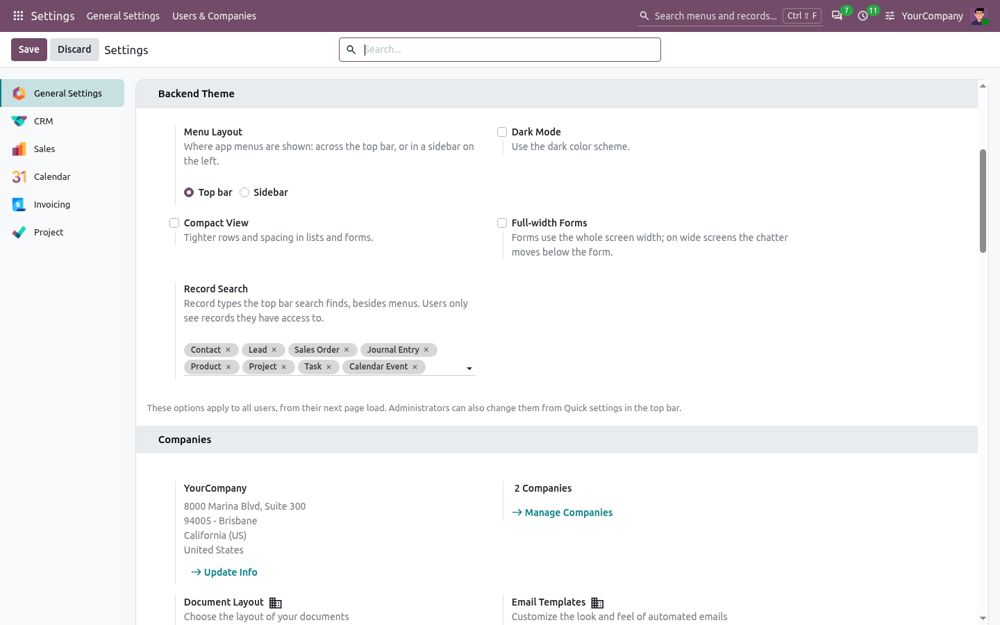
minimal_backend_theme folder into your addons path.web and base_setup.mail) is installed; without it, forms still use the full width.rtlcss tool on the server, as for any Odoo RTL language: npm install -g rtlcss.Minimal Backend Theme · Odoo 20.0 · License LGPL-3 · by Cybrosys